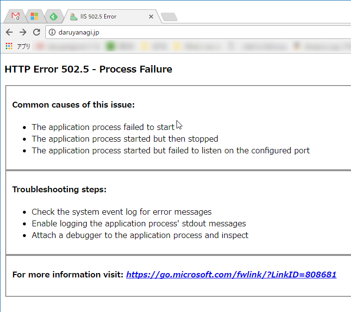

ASP.NET Core 2.0 なサイトを放置してたら死んでた → 復旧
公開日：

今日見たら daruyanagi.jp が死んでた。
HTTP Error 502.5 - Process Failure
Common causes of this issue:
- The application process failed to start
- The application process started but then stopped
- The application process started but failed to listen on the configured port
Troubleshooting steps:
- Check the system event log for error messages
- Enable logging the application process' stdout messages
- Attach a debugger to the application process and inspect
昨日あたりまでは生きていた気がするんだが……彼に何が起こったのか。
せやな
— しばやん (@shibayan) 2017年11月23日
赤い帽子のヤツは助けてくれないし（役立たずめ！）、とりあえずソースコードを探して Visual Studio で開いて実行してみたけど、とくに問題はないみたい。念のため、NuGet を確認してみたら ASP.NET Core 2.0.0 のプレビュー版みたいなやつが入っていたのでアップデート（→ 2.0.3）して再ビルド、発行。

そしたら普通に動いた。ﾌｧｯｷﾝ！
(・д・)ﾁｯ ばれたか
— しばやん (@shibayan) 2017年11月23日
知ってるなら教えろ、ﾌｧｯｷﾝ！
追記
https://t.co/N11NqxSBkC / “https://t.co/9vTmtCukjr Core 2.0 なサイトを放置してたら死んでた → 復旧 - だるろぐ” https://t.co/Vy42aMkqxu
— しばやん (@shibayan) 2017年11月23日
Now that Core 2.0 has been release, App Service will remove support for 2.0 preview runtimes and SDK. This will happen starting in early October 2017.
Action item: make sure that you upgrade all your 2.0 Preview apps to the official 2.0 bits.
See also #27 for a similar announcement relating to prerelease Core 1.x bits.
Please use Azure/app-service-announcements-discussions#12 for discussions about this change.